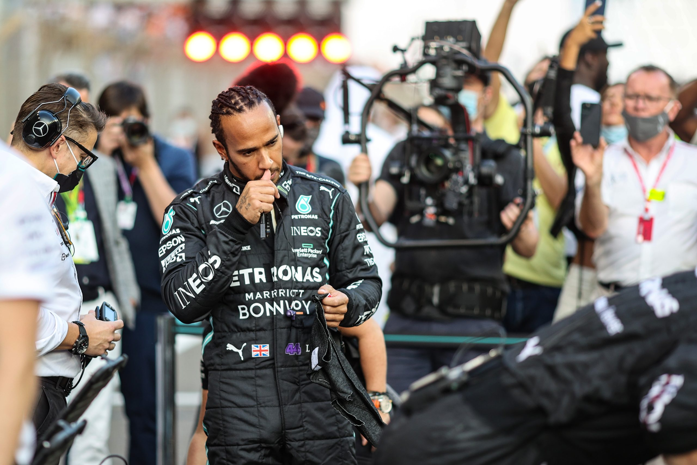

6 February 2021 - Following a near 2 month disappearance after a controversial end to the championship at the 2021 Abu Dhabi Grand Prix, Lewis Hamilton has finally returned to the public eye with the Mercedes driver posting on Twitter and Instagram: “I’ve been gone. Now I’m back!” His posts, which have garnered hundreds of thousands of likes on both platforms within an hour of release, do not confirm his return to the sport for 2022. However, the Brit is expected to come back and get his record-breaking 8th title.
I’ve been gone. Now I’m back! pic.twitter.com/Y8i0cgJXZq
— Lewis Hamilton (@LewisHamilton) February 5, 2022
LEWIS HAMILTON IS BACK pic.twitter.com/WoENQKU0mA
— leo🐋 LEWIS IS BACK (@LH44AA23) February 5, 2022
Not now baby. Lewis Hamilton is back on social media! pic.twitter.com/m3dDxYjFvU
— lil nab x (@JustNabz) February 5, 2022
Lewis Hamilton has broken the internet with only his first post of 2022😂
— Aldas🇱🇹 (@Aldas001) February 5, 2022
Hamilton’s re-appearance arrives just weeks before pre-season testing. This week, all of the drivers are set to meet with FIA authorities to review the race in Abu Dhabi, their reactions to it, and the difficulties that developed last season. After the race, a few of them expressed dissatisfaction with the way the situation was handled.
The mistakes made by race director Michael Masi in Abu Dhabi were just the latest in a sequence of issues that will continue into 2021 concerning the rules' application uniformity. Hamilton said last month that he wouldn't return to Formula One until he knew the results of the FIA's investigation into the events in Abu Dhabi, and Masi's post as race director may not be kept, according to the FIA for the first time last week.
Because the investigation's findings aren't due until March 18th, the start of the Bahrain Grand Prix weekend, and Mercedes' car introduction is a month away, Hamilton's attendance will be the next signal as to whether or not he will continue to work in F1 and drive alongside George Russell in 2022. Regardless, the community is delighted at the champion’s return.
Lewis Hamilton returns!!!
— Matt Gallagher (@MattyWTF1) February 5, 2022